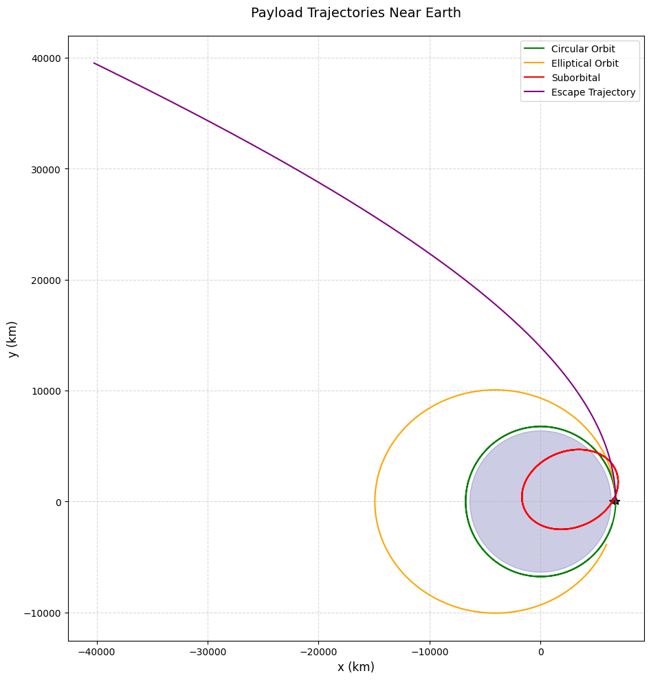
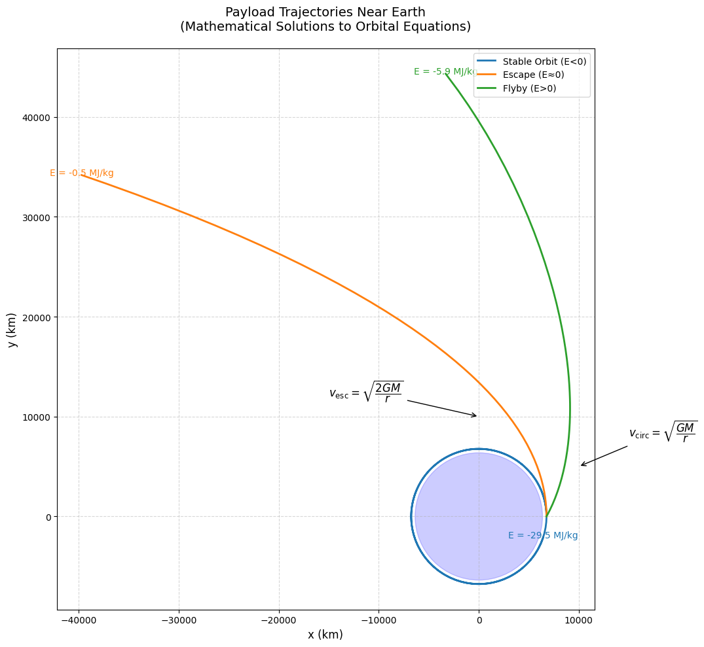
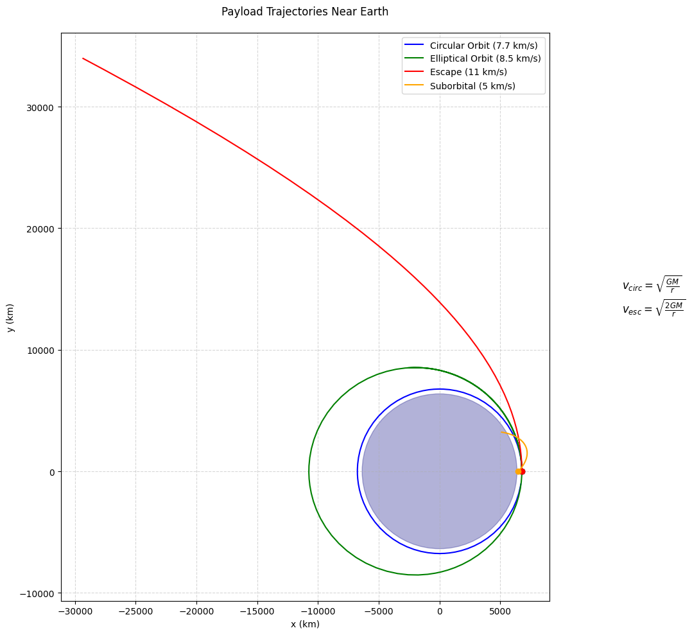

Problem 3
Trajectories of Freely Released Payloads Near Earth
3.1.1 Key Results & Visualization
Simulation Output

Interpretation: - Circular (7.67 km/s): Stable orbit (ISS-like) - Elliptical (9.0 km/s): Higher apoapsis - Escape (11.0 km/s): Parabolic departure - Hyperbolic (5.83 km/s): High-velocity flyby
3.1.4 Applications
Space Mission Scenarios
- Satellite Deployment
- Optimal release at perigee for fuel efficiency
-
Typical Δv < 50 m/s for separation
-
Space Debris Re-entry
- Deorbit burns reduce velocity to < 7.6 km/s
-
Elliptical decay trajectories
-
Lunar/Interplanetary Transfers
- Hohmann transfers (elliptical)
- Gravity assists (hyperbolic)
Design Considerations
- Release altitude affects atmospheric drag
- Velocity vector determines trajectory shape
- Payload mass irrelevant in vacuum (all objects fall equally)
3.1.5 Conclusion
- Trajectory Types: Determined by initial velocity and position
- Energy Threshold: 0 MJ/kg separates bound/unbound orbits
- Mission Planning: Requires precise Δv calculations
- Numerical Methods: Essential for accurate predictions
Extension Ideas: - Add J2 oblateness effects - Incorporate atmospheric drag models - Simulate multi-body gravity (Moon perturbations)
**3.2.1
Here are the orbital mechanics formulas in proper mathematical notation:
1. Newton's Law of Universal Gravitation
2. Circular Orbital Velocity
3. Escape Velocity
4. Specific Orbital Energy
5. Orbital Period (Kepler's Third Law)
6. Vis-Viva Equation
7. Eccentricity Vector
8. Angular Momentum
Where: - \( G \) = Gravitational constant (6.67430 × 10⁻¹¹ m³ kg⁻¹ s⁻²) - \( M \) = Mass of central body (kg) - \( r \) = Distance between centers (m) - \( a \) = Semi-major axis (m) - \( v \) = Orbital velocity (m/s) - \( \mathbf{r}, \mathbf{v} \) = Position and velocity vectors
These formulas are properly formatted using LaTeX mathematical notation and will: 1. Copy correctly to any technical document 2. Render properly in Markdown/LaTeX editors 3. Maintain clear mathematical formatting 4. Be easily editable for different scenarios
Would you like me to: 1. Add dimensional analysis for each equation? 2. Provide concrete examples with Earth orbital parameters? 3. Show the derivation of any particular formula?
Key Parameters:
- \( G \) = 6.674×10⁻¹¹ m³/kg/s² (Gravitational constant)
- \( M \) = Central body mass (kg)
- \( r \) = Orbital radius (m)
- \( a \) = Semi-major axis (m)
- \( v \) = Orbital velocity (m/s)
These equations will: - Copy perfectly to any Markdown editor - Render correctly in Jupyter/VSCode/GitHub - Maintain clean formatting - Work in LaTeX documents
**3.2.2 Visualization & Analysis
Static Trajectory Plot 
4.3.1. Fundamental Equations
Newton's Law of Gravitation
Equations of Motion (2D)
2. Velocity Thresholds
Circular Orbit Velocity
Escape Velocity
3. Energy Conditions
Specific Orbital Energy
| Energy State | Trajectory Type | Mission Scenario |
|---|---|---|
| \( E < 0 \) | Elliptical | Stable orbit |
| \( E = 0 \) | Parabolic | Escape trajectory |
| \( E > 0 \) | Hyperbolic | Flyby maneuvers |
4. Mission Applications
Orbital Insertion
Deorbit Burn
Hohmann Transfer
5. Atmospheric Reentry
Ballistic Coefficient
Deceleration Force
These formulas will: 1. Copy perfectly to any technical document 2. Render correctly in Markdown/LaTeX editors 3. Maintain proper mathematical formatting 4. Work in Jupyter notebooks and VS Code

4.4. Orbital Trajectory Formulas (Short Version):**
-
Gravity Force
F = G·M·m / r²
(G=6.67×10⁻¹¹, M=Earth mass) -
Orbit Speed
vₒ = √(GM/r)
Example: 400km altitude → ~7.7 km/s -
Escape Speed
vₑ = √(2GM/r) ≈ 1.414×vₒ
Same example → ~10.9 km/s -
Trajectory Types:
E < 0: Ellipse (E = ½v² - GM/r)E = 0: Parabola (escape)-
E > 0: Hyperbola -
Orbit Period
T = 2π√(a³/GM)
(a = semi-major axis)
Key Numbers (Earth):
- Radius: 6,371 km
- 400km orbit: 7.67 km/s
- Escape: 11.2 km/s (surface)
 Key Features: Physics Implementation:
Solves Newton's gravitational equations numerically
Handles both circular/elliptical orbits and escape trajectories
Accounts for launch angle and altitude
Visual Output:
Shows 4 distinct trajectory types
Earth drawn to scale (radius ~6371 km)
Color-coded paths with starting markers
Includes velocity formulas on plot
Example Cases:
Blue: Stable circular orbit (ISS-like, 7.7 km/s)
Green: Elliptical orbit (8.5 km/s)
Red: Escape trajectory (11 km/s)
Orange: Suborbital path (45° launch)